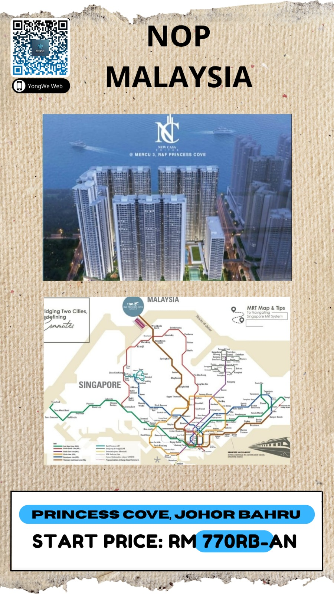

Prince Cove, Johor Bahru
Megaproyek kawasan terpadu (mixed-use development) mewah yang terletak di Johor Bahru,
Malaysia. Properti ini dikembangkan oleh R&F Property, salah satu pengembang terkemuka dari
Tiongkok.
Selling Point:
1)Lokasi :
a)Posisinya yang berada tepat di Tanjung Puteri, yaitu titik paling dekat di Johor Bahru
yang berhadapan langsung dengan Woodlands, Singapura
b)Terdapat Jembatan Jalan Kaki (CIQ Walkway): Skybridge tertutup khusus pejalan kaki
sepanjang 650 meter yang menghubungkan langsung area apartemen ke JB Sentral dan CIQ Complex
(Gedung Imigrasi Malaysia-Singapura).
c)Akses RTS Link: Dari CIQ Complex tersebut, penghuni hanya perlu selangkah menuju stasiun
kereta cepat RTS Link untuk menyeberang ke Singapura dalam waktu 5 menit.
2)Konsep "HOPSCA" (Kota dalam Kota)
R&F Princess Cove merupakan kawasan terpadu dengan konsep HOPSCA (Hotel, Office, Park,
Shopping Mall, Clubhouse, Apartment). Di dalam kawasan ini terdapat:
R&F Mall, Permaisuri Zarith Sofiah Opera House(Gedung opera megah berskala internasional),
Hotel Bintang 5 & Perkantoran
3)Detail Unit & Fasilitas Apartemen
Banyak unit di sini yang menawarkan pemandangan langsung ke Selat Johor dan wilayah
Singapura Utara.
4)Fasilitas Lengkap: Dilengkapi dengan kolam renang ukuran olimpiade, gym, ruang squash,
jalur jogging, ruang serbaguna, taman bermain anak, hingga sistem keamanan ketat 24 jam
dengan kartu akses berlapis.
5)Status Kepemilikan: Freehold (Hak Milik Selamanya)
#InvestasiMalaysiaprincecove
.jpeg)
PICC Penang (Penang International Commercial City), Penang
Kawasan komersial terpadu (mega integrated development) terbesar dikembangkan oleh Hunza
Complex Berhad,
Terletak di kawasan Bayan Lepas (Free Industrial Zone), PICC dirancang dengan konsep smart
city (kota cerdas) dan direncanakan menjadi pusat bisnis, gaya hidup, dan pariwisata baru
yang setara dengan kawasan KLCC di Kuala Lumpur.
Komponen Utama PICC Penang
PICC dibangun dalam beberapa fase di atas lahan seluas kurang lebih 43 hektar. Kawasan ini
menggabungkan berbagai fungsi dalam satu tempat (Live, Work, Play):
PICC Shopping Mall
Akomodasi & Residensial:
Muze @ PICC
Senze @ PICC
Hotel Bintang 5
Perkantoran Kelas A (BPO Tower dan Teknologi)
Pusat Medis (Medical Center)
.jpeg)
Tropicana Cenang, Pantai Cenang, Langkawi
Proyek ini menggabungkan hunian mewah, hotel, dan area ritel dalam satu lokasi.
Selling point:
Lokasi Strategis:
1)Terletak langsung di sepanjang Pantai Cenang yang populer, memberikan akses langsung ke
pantai serta dekat dengan berbagai tempat kuliner, belanja, dan hiburan.
2)Fasilitas Mewah: Mengusung konsep resor dengan fasilitas lengkap seperti kolam renang,
pusat kebugaran, jacuzzi, dan sistem keamanan 24 jam.
.jpeg)
Arden Serviced Residence, Johor Bahru
Apartemen servis mewah (serviced apartment) kelas premium
Selling Point :
1)Lokasi & Konektivitas Super Strategis
a)Berada di dalam kawasan megaproyek One Bukit Senyum, pusat kota Johor Bahru
b)Berjarak hanya sekitar 600 meter dari stasiun RTS Link di Bukit Chagar menghubungkan Johor
Bahru langsung ke stasiun MRT Woodlands North di Singapura hanya dalam waktu 5 menit
c)Berjarak 800 meter dari CIQ Complex (Bangunan Sultan Iskandar)
2)Konsep & Spesifikasi Properti
a)The Arden dirancang sebagai menara ikonik setinggi 68 lantai yang menawarkan pemandangan
spektakuler ke arah Selat Johor dan cakrawala Singapura (Singapore skyline).
b)Jumlah Unit: Sangat eksklusif, hanya terdiri dari sekitar 618 unit hunian.
c)Dual-Zoning System: Gedung ini dibagi menjadi dua zona utama:
Private Residence Zone
Hotel Stay Management Zone
d)Fasilitas Mewah Standar Bintang 5
Grand Lobby mewah dengan layanan concierge 24 jam.
Infinity pool yang menghadap langsung ke arah Singapura.
Sky Lounge & Wine Lounge di lantai atas untuk bersantai.
Fasilitas kebugaran modern, simulator golf, ruang teater, hingga area bermain anak dan br
penitipan anak (childcare).
#InvestasiMalaysiaArdenserviceresidence
.jpeg)
Tropicana Grandhill, Genting Highland
Proyek pembangunan kota mandiri (township) terintegrasi yang terletak di Genting Highlands,
Pahang, Malaysia. Mengusung konsep kehidupan di dataran tinggi yang sejuk dengan fokus pada
kesehatan dan kelestarian alam (holistic wellness living).
Selling point:
Lokasi dan Lingkungan Sejuk:
1)Terletak di kawasan Genting Highlands yang terkenal dengan udara pegunungan yang segar dan
suhu yang sejuk sepanjang tahun
2)Fasilitas Terintegrasi
Proyek berskala besar ini direncanakan untuk mencakup berbagai fasilitas komprehensif, mulai
dari pusat kesehatan, taman edukasi, fasilitas lansia, pusat ritel dan kuliner, hingga taman
rekreasi
.jpeg)
Lexis Hibiscus, Port Dickson
Resor bintang 5 paling ikonik dan mewah di Malaysia,
memiliki arsitektur unik, di mana
deretan vila di atas airnya dibangun membentuk bunga raya (hibiscus),
yang merupakan
bunga
nasional Malaysia.
Setiap unit kamar di Lexis Hibiscus dirancang sangat luas (mulai dari sekitar 70-80 meter
persegi) dan dilengkapi dengan fasilitas premium: br
Kolam Renang Pribadi (Private Plunge Pool)
Ruang Uap Pribadi (Private Steam Room)
Lantai Kaca Transparan: Khusus untuk beberapa tipe vila atas laut tertentu (seperti
Panorama Pool Villa)
Kapasitas Besar: Sebagian besar kamar standar mereka dilengkapi dengan 2 kasur ukuran King
Fasilitas Resor & Aktivitas:
Layanan Buggy(mobil golf) 24 Jam
Hibiscus Walk: Area luar ruangan di tepi pantai yang menyajikan deretan kios makanan lokal
khas Malaysia
Aktivitas Air & Pantai: Tersedia penyewaan Jet Ski, Banana Boat, Kayak, hingga paket Sunset
Cruise (pesiar matahari terbenam).
Fasilitas Rekreasi Lainnya:
Kolam renang luar ruangan utama, pusat kebugaran (Gym),
LexSpa,
ruang karaoke (Starz Karaoke), penyewaan sepeda, dan area bermain anak (Kidz World).,
pertunjukan Api (Fire Show)
.jpeg)
IBN Bukit Bintang
Proyek gedung pencakar langit mewah yang terletak di kawasan strategis Bukit Bintang, pusat
belanja dan hiburan di Kuala Lumpur, Malaysia. Proyek ini dikembangkan oleh IBN Corp Limited
(bekerja sama dengan KKH Development Sdn Bhd).
Selling Point:
1. Karakteristik & Desain Bangunan
Konsep Mixed-Use: Bangunan ini menggabungkan hunian servis (serviced residence) dan hotel
berbintang.
Fitur Dual-Key: Banyak unit yang menggunakan desain dual-key (satu pintu utama dengan dua
unit mandiri di dalamnya).
Teknologi Smart Home
2. Fasilitas Kelas Dunia (Sky Facilities)
Proyek ini menawarkan fasilitas mewah yang berada di ketinggian (sky facilities), antara
lain:
Infinity Pool Tertinggi kolam renang tanpa batas (infinity pool)
Sky Bar & Sky Lounge
Fasilitas Lain: Sky gym, sky spa, taman vertikal (sky garden), serta sistem parkir valet
otomatis
3. Lokasi & Aksesibilitas
Terletak di kawasan Golden Triangle (Segitiga Emas) Kuala Lumpur
Transportasi: Hanya berjarak beberapa menit jalan kaki ke Stasiun MRT Bukit Bintang dan
stasiun Monorail.
Sangat dekat dengan mall-mall besar papan atas di Malaysia, seperti Pavilion Kuala Lumpur,
Lot 10, Fahrenheit 88, Starhill Gallery, dan Berjaya Times Square.
#Investasimalaysiaibnbukitbintang
.jpeg)
Pavilion Square Kuala Lumpur
adalah proyek pengembangan properti mewah (luxury mixed-use development) terbaru yang
terletak di lokasi paling premium di kawasan Bukit Bintang
Proyek ini dikembangkan oleh Pavilion Group
Selling Point:
1)Lokasi Terbaik (Ultra-Prime Location)
Terletak tepat di sebelah pusat perbelanjaan mewah Pavilion Kuala Lumpur Mall (Pavilion
KL).
Terhubung langsung melalui jembatan penyeberangan khusus (linked bridge) ke Pavilion Mall,
serta memiliki akses jalan kaki yang sangat dekat ke Stasiun MRT Bukit Bintang.
Segitiga Emas: Berada di pusat "Golden Triangle" Kuala Lumpur, dikelilingi oleh hotel
bintang lima, restoran mewah, dan pusat bisnis.
2)Konsep Pengembangan
Pavilion Square memadukan hunian vertikal mewah dengan area komersial:
Pavilion Square Residences
Corporate Office Tower kelas A
Akses Ritel Eksklusif
3. Fasilitas Mewah (Luxury Amenities)
Sky Pool & Sky Lounge, pusat kebugaran (gymnasium) mutakhir, ruang yoga, dan fasilitas spa.
Layanan Pramutamu (Concierge Service): Layanan resepsionis dan keamanan 24 jam dengan
standar hotel bintang lima untuk memastikan privasi dan kenyamanan penghuni.
4. Nilai Investasi Tinggi
Proyek ini sangat diminati oleh investor lokal maupun internasional karena:
Brand Pavilion: Nama besar "Pavilion" menjamin kualitas bangunan, manajemen properti yang
baik, dan nilai prestise yang tinggi.
Potensi Sewa yang Kuat
.jpeg)
Richmond Stellar Kuala Lumpur
Proyek pengembangan properti mewah yang memadukan hunian residensial eksklusif dengan
fasilitas premium
Selling Point:
1. Lokasi yang Strategis
Dekat dengan pusat bisnis (CBD) Kuala Lumpur dan Menara Kembar Petronas (KLCC).
Terhubung langsung dengan lebuhraya utama seperti DUKE, SPRINT, dan PLUS.
Dekat dengan sekolah internasional terkemuka, pusat perbelanjaan premium, dan rumah sakit
modular.
2. Konsep dan Desain
Hunian dirancang dengan langit-langit tinggi dan jendela besar untuk memaksimalkan
pencahayaan alami serta sirkulasi udara.
Menawarkan pemandangan panorama kota (skyline) Kuala Lumpur yang memukau.
3. Fasilitas Kelas Dunia
Kolam renang infinity dengan pemandangan kota.
Pusat kebugaran (gym) berspesifikasi tinggi.
Area rekreasi, taman lanskap, dan ruang serbaguna.
Sistem keamanan 24 jam berlapis untuk menjamin privasi dan keamanan penghuni.
4. Target Pasar dan Investasi
Proyek ini sangat cocok untuk:
Ekspatriat dan Profesional: Karena lokasinya yang dekat dengan pusat bisnis dan sekolah
internasional.
Investor Properti: Memiliki potensi imbal hasil sewa (rental yield) yang menjanjikan dan
apresiasi modal (capital appreciation) yang tinggi mengingat pertumbuhan properti di Kuala
Lumpur yang tetap kuat.